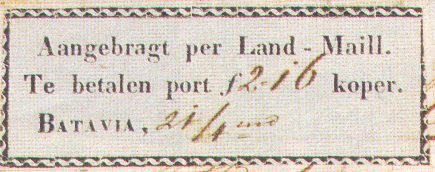
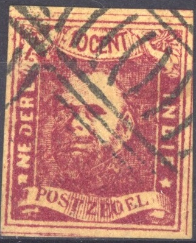
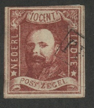
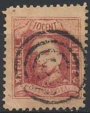
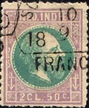
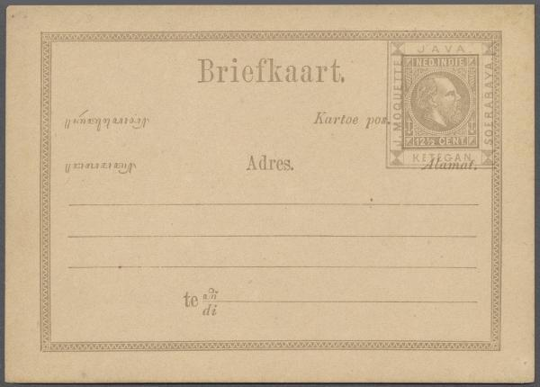
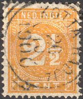
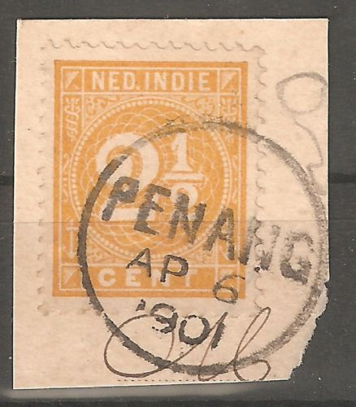
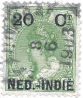

Return To Catalogue - 1901-1920 issues and miscellaneous - Netherlands - Postage due stamps (Te betalen port) - Indonesia - Cancels of Netherlands Indies - J.P.Moquette (stamp forger)
Netherlands Indies is often called Dutch Indies
Note: on my website many of the
pictures can not be seen! They are of course present in the
catalogue;
contact me if you want to purchase it.

These labels were used on letters coming from Europe that were picked up by the Netherlands Indies authorities in Singapore (they were transported by the English through the Suez canal by so-called land mail and not the longer way around South Africa). The labels indicate a fee for the transportation from Singapore to Netherlands Indies. They were used from 1845 to 1847 and are rare. The shown envelope and label are from the dutch PTT museum in the Hague. The text on the labels reads: 'brought in by land mail. To be paid f.... Batavia', the date and the amount to pay were written in the labels. Another example:
Similar labels seem to exist with inscription: 'Aangebragt per Land-Mail Te betalen duiten Batavia,', they are slighly smaller.
Label with inscription 'Aangebragt per Land-Mail. Te betalen port
duiten BATAVIA,'
Value of the stamps |
|||
vc = very common c = common * = not so common ** = uncommon |
*** = very uncommon R = rare RR = very rare RRR = extremely rare |
||
| Value | Unused | Used | Remarks |
| All labels | RRR | RRR | |
10 c red
Value of the stamps |
|||
vc = very common c = common * = not so common ** = uncommon |
*** = very uncommon R = rare RR = very rare RRR = extremely rare |
||
| Value | Unused | Used | Remarks |
| 10 c | RR | *** | Imperforate (1864); 2 Million stamps were printed. |
| 10 c | RRR | R | Perforated 12 1/2 x 12 (1865). About 1 Million stamps were printed. |
These stamps were declared invalid on 31 December 1900. For information on cancels on this issue click here.
Forgeries, (note the strange expression on the face of the king):


Forgery with very staring eyes.
Spiro forgery (note the strange cancel, that was never used in this country):



Spiro forgery, "P" of "POSTZEGEL" too high
(touching the end of the label above it)
This forgery made by Spiro was already described in 'The Stamp Collector's Magazine' in 1864 (1st October, page 157, wrongly described as 5 c?).
I've been told that the next two forgeries are engraved forgeries made by Oneglia. I doubt this information is correct.




Forgery with 'VF' cancel. This typical
'VF' cancel can be found on forgeries of many other
countries.

1 c olive 2 c brown 2 1/2 c yellow 5 c green 10 c brown 12 1/2 c grey 15 c brown 20 c blue 25 c violet 30 c green 50 c red 2 G 50 c violet and green
For the specialist: these stamps exist perforated 11 1/2 x 12, 12 1/2, 12 1/2 x 12, 13 x 14, 13 1/2 and 14. For information on cancels on this issue click here. These stamps were declared invalid 31 December 1900.
Value of the stamps |
|||
vc = very common c = common * = not so common ** = uncommon |
*** = very uncommon R = rare RR = very rare RRR = extremely rare |
||
| Value | Unused | Used | Remarks |
| 1 c | * | * | Two types; length of 'CENT.' different, 6 or 7 1/2 mm |
| 2 c | ** | * | Two shades of brown were issued A 2 c yellow exists (bogus or misprint?) |
| 2 1/2 c | ** | ** | 1874 |
| 5 c | * | * | |
| 10 c | * | c | |
| 12 1/2 c | c | c | 1887 |
| 15 c | ** | c | 1874 |
| 20 c | *** | c | |
| 25 c | ** | c | 1874 |
| 30 c | * | c | 1887 |
| 50 c | *** | c | |
| 2 G 50 c | *** | ** | Issued 1874. Exists imperforate |

Typical cancel with parts of a ring of Weltevreden.
(forgeries, reduced sizes)



Forgeries of these stamps exist, they are quite convincing at first sight. However they have only 86 pearls instead of 87 pearls in the circle surrounding the head. The pearls themselves are more like dashes. The forgeries are perforated 13 1/2. Maybe the easiest way to recognize these forgeries is their cancels: 'SAMARANG 23 12 18 70', 'SOERABAIJA 10 9 18 70' or 'MAKASSAR 15 11 18 70' in a half-circle with 'FRANCO' below. Also note that the pearls are not nicely round in the above forgeries, but more flattened.
Some other forgeries, note that these forgeries have guide lines outside the design:
I posess the 5 c green of this particular forgery type. It
appears as it they are cancelled with the same cancels mentioned
above for the first forgery(?).
Some imperforate forgeries (look quite dangerous!):
Envelopes in the same design was issued in 1881 (10 c brown, 20 c blue and 25 c violet). The 10 c exist with a threefold overprint ('BRIEFOMSLAG TIEN CENT') and an provisional surcharge of '15' exists on the 25 c violet value.
7 1/2 c brown, cut from a postcard

"BRIEFOMSLAG TIEN CENT" overprint on 10 c.
(Postal Stationery: '10' on 20 c and '15' on 25 c, reduced sizes)
Postcards ('Briefkaart') exist in the values 5 c violet (1874), 5 c green (1885), 7 1/2 c brown (1878) ans 12 1/2 c grey (1879). The 12 1/2 c grey exists with a large '5' overprint (issued 1879 in several overprint colours). This overprint also exists as 'VIJF CENT' or 'Vijf cent' (probably bogus). Without overprint I have seen postcards in the value 5 c lilac, 7 1/2 c brown.
(tranported by English mail 'per Engelsche mail')


During the military expedition in Atjeh 5 c violet postcards were set at the disposal of the soldiers for free. These cards have a cancel 'SPECIMEN' in a rectangle in the left upper corner (and the numerical field post cancel '66').

1 c olive 2 c brown 2 1/2 c yellow 3 c lilac 5 c green 5 c blue Surcharged

'1/2' on 2 c brown (1902) '2 1/2' on 3 c lilac (1902) Overprinted 'DIENST' (Official stamp, 1911)
(No picture available yet, your help is needed, if you posess a picture of this stamp, contact me!)
2 1/2 c yellow
These stamps exist with various perforations.
Value of the stamps |
|||
vc = very common c = common * = not so common ** = uncommon |
*** = very uncommon R = rare RR = very rare RRR = extremely rare |
||
| Value | Unused | Used | Remarks |
| 1 c | c | vc | |
| 2 c | c | vc | |
| 2 1/2 c | c | c | |
| 3 c | c | vc | 1890 |
| 5 c green | * | * | |
| 5 c blue | * | vc | 1890 |
| Surcharged | |||
| 1/2 c on 2 c | c | c | 1902 |
| 2 1/2 c on 3 c | c | c | 1902 |
| Official stamp (Dienst) | |||
| 2 1/2 c | c | c | |
7 1/2 c red postcard in the same design, issued 1892(?) reduced
size. Note the 'N.I.AGENT SINGAPORE' cancel on the left side from
the Dutch Indies Agency in Singapore.
I have seen postcards ('Briefkaart') in the same design as the above stamps in the values 5 c blue, 5 c green and 7 1/2 c red.
Unlisted overprint or bogus(?), '5 CENT.' on 2 c:
Reduced size. This could be a bogus overprint made by the forger J.P.Moquette

Stamp with a "PENANG" (Malaysia) cancel.


10 c brown 12 1/2 c grey 15 c olive 20 c blue 25 c lilac 30 c green 50 c red 2 G 50 c brown and blue
These stamps are perforated 12 1/2.
Value of the stamps |
|||
vc = very common c = common * = not so common ** = uncommon |
*** = very uncommon R = rare RR = very rare RRR = extremely rare |
||
| Value | Unused | Used | Remarks |
| 10 c | c | vc | |
| 12 1/2 c | * | * | |
| 15 c | * | c | |
| 20 c | * | c | |
| 25 c | * | c | |
| 30 c | * | c | |
| 50 c | * | c | |
| 2 G 50 c | *** | *** | |
Overprinted with 'D' in a circle (official stamps)

(Reduced size)
10 c brown 12 1/2 c grey 15 c olive 20 c blue 25 c lilac 30 c green (not officially issued) 50 c red 2 G 50 c brown and blue
All values exist with inverted overprint.
Value of the stamps |
|||
vc = very common c = common * = not so common ** = uncommon |
*** = very uncommon R = rare RR = very rare RRR = extremely rare |
||
| Value | Unused | Used | Remarks |
| 10 c | c | c | |
| 12 1/2 c | * | * | |
| 15 c | * | * | |
| 20 c | * | * | |
| 25 c | ** | ** | |
| 30 c | ? | - | Unofficial issue |
| 50 c | * | * | |
| 2 G 50 c | *** | *** | |
The usual cancel on this issue is the 'square cancel', although the 20 c, 25 c and 50 c exist with the numeral cancel.


10 c on 10 c grey 12 1/2 c on 12 1/2 c bue 15 c on 15 c brown 20 c on 20 c green 25 c on 25 c red and blue 50 c on 50 c green and brown
2 G 50 on 2 1/2 G violet (larger size)
The perforation of the low values is 12 1/2. The 2 G 50 c exists with perforation 11 1/2 x 11 or 11.
Value of the stamps |
|||
vc = very common c = common * = not so common ** = uncommon |
*** = very uncommon R = rare RR = very rare RRR = extremely rare |
||
| Value | Unused | Used | Remarks |
| 10 c on 10 c | c | vc | |
| 12 1/2 c on 12 1/2 c | c | c | |
| 15 c on 15 c | c | c | |
| 20 c on 20 c | * | c | |
| 25 c on 25 c | * | c | |
| 50 c on 50 c | * | c | |
| 2 G 50 c on 2 G 50 c | *** | ** | |
Four envelopes in the same design were issued in the values: 10 c on 10 c grey, 12 1/2 c on 12 1/2 c bue, 15 c on 15 c brown and 20 c on 20 c green.
Typical cancel of this period: 'BUITENZORG' (nowadays Bogor) in circle surrounded by square:
For issues of 1901-1920 and miscellaneous click here.


{kind=link}
{kind=link}
{kind=link}
{kind=link}